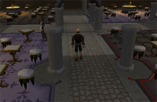

")
Spielezimmer
Einführung | Lage | Voraussetzungen | Empfohlene Ausrüstung | Die Spiele
Dame | Rune gewinnt | Runenversi | Runenquadrat | Entwicklung
Dame | Rune gewinnt | Runenversi | Runenquadrat | Entwicklung
Nur RuneScape-Mitglieder haben Zugang zu diesem Minispiel. Wenn ihr euch anmeldet, könnt auch ihr dieses Feature nutzen.
Bitte beachtet, dass dies ein 'sicheres' Minispiel ist. Ihr könnt dabei nicht sterben, außer ihr wurdet vergiftet.
Einführung

Lage

Nach Burthorpe kommt ihr entweder zu Fuß oder indem ihr eine Spiele-Halskette benutzt. Diese könnt ihr anderen Spielern abkaufen oder ihr könnt selbst eine herstellen.
Wenn ihr mehr Informationen über Handwerk und das Verzaubern von Schmuck benötigt, lest euch die Abschnitte Handwerk und Magie durch.
Voraussetzungen
Für das Spielezimmer gibt es keine Voraussetzungen.
Empfohlene Ausrüstung
Für den Besuch des Spielezimmers sind keine Gegenstände nötig.
Die Spiele

Im Spielezimmer können momentan die folgenden vier Spiele gespielt werden: Rune gewinnt, Dame, Runenquadrat und Runenversi. Die momentan noch leeren Räume werden für zukünftige Erweiterungen genutzt. Wenn sich das Spielezimmer als sehr beliebt erweist, wird es in den anderen Räumen noch viele andere Spiele geben.
Ihr beginnt mit Rang 1.000. Wenn ihr gegen jemand anders spielt, benutzt ihr automatisch etwas von eurem Rang als Einsatz, genau wie euer Gegner.
Wenn ihr gegen jemanden mit einem sehr niedrigen Rang spielt, ist euer Einsatz hoch, aber der des anderen Spielers sehr gering. Wenn ihr aber gegen jemanden mit einem viel höheren Rang spielt, ist euer Einsatz klein, aber ihr könnt viel gewinnen. Wenn ihr gewinnt, erhaltet ihr den Einsatz des anderen Spielers. Wenn ihr verliert, ist euer Einsatz futsch.
Ihr könnt Spieler zwar überall im Spielezimmer herausfordern, es gibt aber auch für jedes Spiel zwei spezielle Herausforderungszimmer. Wenn ihr in eins dieser Zimmer geht, erscheint das Spielbrett für das jeweilige Spiel in eurem Spielfenster. So könnt ihr auch euren Rang und den der anderen Spieler sehen, wenn ihr auf sie rechtsklickt. Wenn ihr genug Erfahrung gesammelt habt, könnt ihr das Herausforderungszimmer für erfahrene Spieler betreten.
Dame

Beide Spieler beginnen mit 12 der von ihnen gewählten Runen. Euer Ziel ist es, die Spielsteine des Gegners zu schlagen, bevor er das mit euren macht. Um das zu tun, müsst ihr die Runen diagonal nach vorn bewegen und über die Runen eures Gegners drüberspringen. Wenn eine eurer Runen die andere Seite des Bretts erreicht, wird sie eine Dame und kann sowohl vorwärts als auch rückwärts diagonal bewegt werden.
Woran ihr denken solltet:
- Man kann nur diagonal auf den dunklen Kästchen springen.
- Man muss immer springen.
- Eine normale Rune kann sich nur nach vorn bewegen.
- Eine 'Dame' kann sich vorwärts und rückwärts bewegen.
- Wenn eure Zeit für einen Zug abgelaufen ist, wird eine eurer Runen automatisch bewegt.
Dame wird nach diesen Standardregeln gespielt. Ausnahme ist, wenn nach 40 Zügen keine Rune bewegt oder geschlagen wurde. In diesem Fall endet das Spiel als 'Unentschieden'.
Rune gewinnt

Das Ziel von 'Rune gewinnt' ist es, vier eurer Runen in einer Reihe zu verbinden. Der erste Spieler, der vier Runen in einer diagonalen, horizontalen oder vertikalen Linie hat, gewinnt das Spiel.
Um das Spiel zu beginnen, müsst ihr auf einen anderen Spieler rechtsklicken und die Option 'Spieler herausfordern' auswählen. Dann könnt ihr das Spiel auswählen und auch ein paar andere Optionen einstellen. Ihr könnt euch aussuchen, welche Rune euer Spielstein sein soll. Ihr könnt auch einstellen, wie viel Zeit pro Zug erlaubt ist und ob das Spiel Einfluss auf euren Rang haben soll. Bitte denkt daran, dass - genau wie bei Dame - eine Rune automatisch bewegt wird, falls die Zeit für einen Zug abgelaufen sein sollte.
Wenn ihr mal eine Pause vom Spielen machen möchtet, könnt ihr die Spiele von anderen Spielern beobachten, indem ihr auf Spieltische klickt, die von anderen Spielern benutzt werden. Das könnt ihr machen, um beispielsweise zu sehen, wer gewinnt oder was für Taktiken andere Spieler benutzen.
Runenversi

Runenversi ist die Variante von Reversi (oder Othello), die der Prinz sich hat einfallen lassen. Ziel des Spiels ist es, mehr Runen als der Gegner auf dem Brett zu haben. Die gegnerischen Runen könnt ihr euch aneignen, indem ihr sie mit euren eigenen umgebt.
Bevor das Spiel anfängt, müssen die Spieler ihre Spielsteine aussuchen, bestimmen, wie viel Zeit pro Zug erlaubt ist und ob das Spiel ihren Rang beeinflussen wird.
Die Spieler legen abwechselnd eine ihrer Runen auf ein leeres Feld auf dem Brett, indem sie darauf linksklicken. Eine Rune kann nur platziert werden, wenn durch sie eine oder mehrere Runen des Gegners in Besitz genommen werden. Wenn sie einmal abgelegt wurde, kann sie nicht mehr bewegt werden. Sie kann allerdings von eurem Gegner auf die gleiche Art übernommen werden.
Um in den Besitz einer oder mehrerer Runen eures Gegners zu gelangen, müsst ihr sie mit zwei eurer eigenen Runen in die Zange nehmen. Die Runen eures Gegners verwandeln sich dann in eure Runenart. Dies kann mit einer Reihe horizontaler Runen geschehen, einer vertikalen Spalte von Runen, einer diagonalen Linie von Runen oder einer Kombination aus diesen 3 Möglichkeiten.
Das Spiel endet, sobald das Brett voll ist. Der Spieler mit den meisten Runen gewinnt. Falls sich von beiden Spielern gleich viele Runen auf dem Brett befinden, endet das Spiel mit einem 'Unentschieden'.
Runenquadrat
Runenquadrat könnt ihr in der südwestlichen Ecke des Spielezimmers spielen.

Wenn ein Spieler die vierte und letzte Linie des Quadrats zieht (sodass das Quadrat vollständig ist), erscheint seine Rune in dem Feld und er kann dann weiterspielen, bis er es nicht mehr schafft, ein Quadrat zu vervollständigen.
Das Spiel endet, wenn keine Linien mehr gezogen werden können. Der Spieler, der die meisten Felder mit seinen Runen gefüllt hat, gewinnt das Spiel.
Entwicklung
Entwicklung: Jon S
Grafik: Tony A-V
Qualistätssicherung: Mark O
Audio: Ian T

Weitere Artikel in Minispiele
|
|
|
Weiterführende Informationen Wenn euch dieser Artikel nicht weitergeholfen hat, könnt ihr in den folgenden Kapiteln der RuneScape-Webseite mehr Informationen finden:
|
|